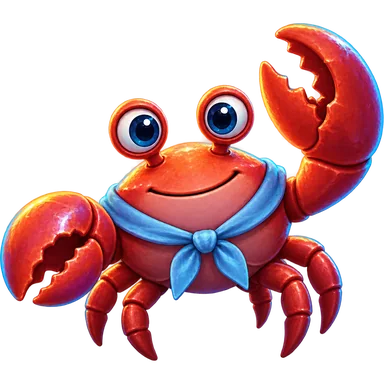

שרטוט בלבד: שאלת מכשיר הניסיון והדרך חזרה, במראה של המשחק. הכפתור הגדול הוא הבטוח (חזרה), כי ילד שהגיע בטעות צריך רק ללחוץ עליו.
שאלת מכשיר ניסיון · 390×844

כאן בודקים את המערכת החדשה של המשחק. הגעתם לכאן בטעות? אין בעיה: חוזרים למשחק הרגיל, וכל מה שעשיתם בו נשמר.
שאלת מכשיר ניסיון · 360×740
כאן בודקים את המערכת החדשה של המשחק. הגעתם לכאן בטעות? אין בעיה: חוזרים למשחק הרגיל, וכל מה שעשיתם בו נשמר.
שאלת מכשיר ניסיון · 320×568
כאן בודקים את המערכת החדשה של המשחק. הגעתם לכאן בטעות? אין בעיה: חוזרים למשחק הרגיל, וכל מה שעשיתם בו נשמר.
כניסה במכשיר ניסיון · 360×740
כניסה במכשיר ניסיון · 320×568